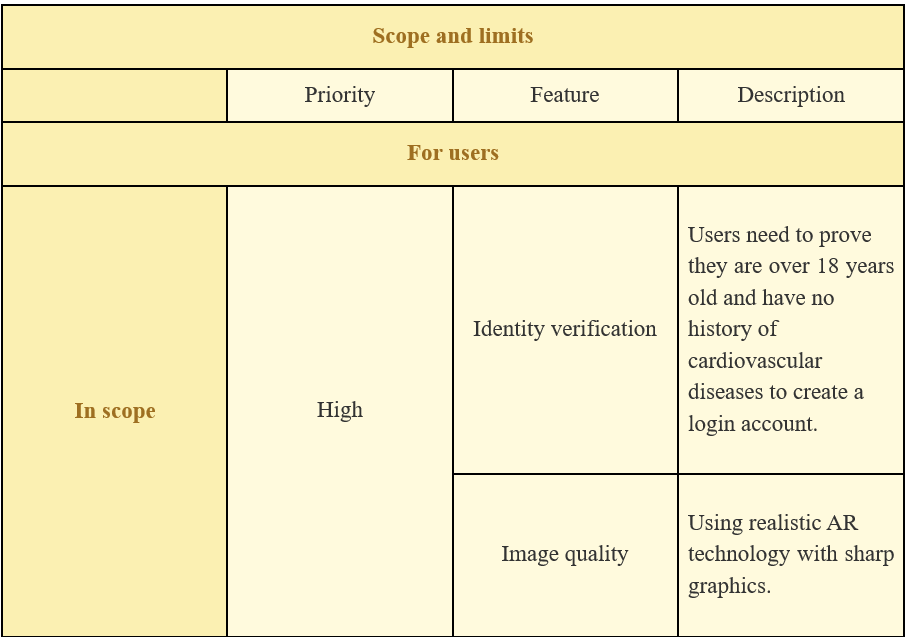

Detailed Description
Our project aim is creating a strategy horror game named “Danger of darkness”. Our purpose when we create this game is not only for players to relax, reduce stress, and transmit the message of our game; we also put our effort with the ambitions to bring “Danger of darkness” to the whole world. Brief information about the game, players are able to role-play the kidnapper character and need to use their intelligence to pass the challenges and finish each level. After finishing each level, the game has a saving point system where players can use these points to unlock new levels and skills. At the end, when players finish all levels, they can earn the message of the game. Here are several goals we need to achieve to be able to complete the project:
Take advantage of the potential of Vietnam game industry
According to vneconomy.vn (1), in 2021, Vietnam's game industry market generated roughly 316 million USD in revenue from online games, and the set goal in the next 5 years is to reach revenue of 1 billion USD. Moreover, Vietnam's game market is being noticed by the world’s major game markets such as Korea, Japan, and the North America region. From that, we can see the potential of the Vietnamese game industry and the high opportunity to bring our games to the world. With the rapid expansion of the internet and also the growing Vietnam game market, it is not hard to bring the game closer to players. However, the crucial key is how to ensure that our game remains a player favorite and keeps players.
Create dark and scary background
For horror games, context plays a significant role in increasing the attractiveness and drama of the game. Therefore, creating a scary, dark, desolate setting will give players a feeling of fear when playing. Moreover, the more realistic the scene is, the more terrifying it will be because players will feel as though they are actually experiencing it.
Design obstacles and challenges in each level
In the game, we have created several challenges that players need to do to complete objectives and advance to the next level. However, in order to stimulate curiosity and increase the desire to conquer the game, we need to create obstacles that are neither too hard nor too simple, so that players still can pass but also need to put some effort on it. Furthermore, in order to keep players interested and avoid overlap with other games, we need to design a wide variety of challenges that are diversified, unique, and different.
Translate the game designer’s idea into technical specifications.
Create prototypes of gameplays mechanics and systems.
Optimize the game’s performance.
Work with programmers to implement and debug these mechanics and systems.
Work along with other members of the development team, such as artists, game designers, and programmers, to make the game a seamless and satisfying experience.
User Interface Designer
Create wireframes and mockups of the UI.
Choose font, colors, and other visual elements that are easy for customers to read and understand.
Optimize the UI for different devices and screen sizes.
Idea and proposal

Preparation
Application Development

Presentation
Report
Project Manager / Lead Developer
Overseeing the development of the game. They work with all members of the team to ensure that the game is completed on time and within the budget.
Be responsible for the overall technical direction of the game. They collaborate with the programmers, artists, and other team members to make that the game is created effectively and consistently.
Level Designer
Brainstorm level ideas and concepts.
Create detailed level designs.
Work with artists and programmers to implement levels.
Sound Designer
Create sound effects, such as footsteps, explosions, and gunshots.
Create music background and main theme.
Record voice acting, such as the dialogue and narration.
Mix and master the audio to make sure that the sounds are clear and balanced.
Work with designers and programmers to make sure that the audio is consistent with the game’s vision.
Animator
Illustrate the movement of the characters and objects.
Break down animation into individual frames.
Optimize the animation for the game engine.
Game Designer
Brainstorm new game ideas.
Create detailed design documents that outline the game’s mechanics, story, and levels.
Work with programmers to implement the game’s features.
Quality Assurance Tester
Create and run test cases that will test the products functionally.
Create reports on the results of the testing.
Document the bugs and their fixes.
In order for the project to be the most comprehensive version, the testing steps are extremely significant and necessary. In the testing process, we will test every single sector in the game when we finish each stage such as sound, graphic, control setting, and gameplay of the game. These factors are an indispensable part in the game because it can impact the experience of players while they are actively playing. Because of this, we must thoroughly examine each individual step before combining them into a single, finished form for the subsequent testing portion.
For thorough inspection before Beta testing, we have a team specializing in game testing that will test all parts and elements of the game. They will play the same scene over and over again to check for errors such as sound errors, motion errors or errors about gameplay. The testing phase is crucial because if the testers overlook one error, it not only negatively influences the playing experience, the error also can affect the performance of the game which could prevent gamers from completing the game. Following testing, the testers will provide written reports with input on these mistakes and problems so that game programmers and designers can correct them.
The last step of testing the game is publishing the Beta version of the game for a small group of players who are already registered. These players are the members of the gaming communities who enjoy the horror genre that we have invited to register to become the first players to play our game. Through the external testing, we can gain feedback from the players about our game from reading the comments, reviews on game trading platforms such as Steam, or our fanpage. Moreover, playing processes of players are also recording and storing which serves for the game development. This Beta testing will only last 2 months, after which we will close to continue the improvement and development process in order to create an official version.
Tools for Application Development
Tools: Visual Studio Code (Version 1.82), Unity Hub (Version 2.4.5)
Visual Studio Code is the best go-to code editor for beginners. It’s lightweight, fast and a lot of features, like IntelliSense, that is a code-completion aid that speeds up the coding process by reducing typos and other common errors. Besides that, we use Unity Hub, version 2.4.5, to create 3D game, from scene creation and asset management to scripting and debugging. It also has a built-in game engine that allows you to play and test your game inside the editor. This is a game engine for beginner and experienced developers. With the lack of knowledge about coding game, it’s easy to use and learn and a ton of features, for example built-in game engine that allows our team to play and test game inside the editor.
Tools for Project Management
Tools: GitHub, Google Drive, Google Planner
There are a lot of planner website for us to choose, but we decide to use Google Planner because it is a great to keep track and easy to use and integrates well with other Google products, like Gmail and Calendar. Furthermore, Google Drive also a great website to store and share my files to our team. Lastly, GitHub has enhanced my productivity. It's simple to trace my changes and go back to earlier versions if I make a mistake thanks to the version control tools. I've saved a ton of time and hassle because of this.
Tool for Graphic Design
Tools: Autodesk 3ds Max 2023
A professional 3D computer graphics tool for creating 3D animations, models, games, and photographs is Autodesk 3Ds Max. Although there is a free trial period and some functions have time restrictions, we choose to pay to use full version instead. We chose to employ a pen display so that it could be operated precisely and comfortably. By using it, we can have more intuitive and natural drawing experiences. This is how we build the environments and models for our game. We chose to employ a pen display so that it could be operated precisely and comfortably. By using it, we can have more intuitive and natural drawing experiences.
Tool for Sound Design
Tools: FL Studio (Version 21.1.1.3750)
FL Studio is known as a digital audio workstation. We use this application to create theme music and effects sound (such as footsteps, gunshots). This application has free trial too, but it also has limited time to use. It has for 4 editions, and we choose the most expensive one to unlock full features. It is easy to use and learn. Besides that, it’s great for creating wide range of sound effects.
Tool for Game Testing
Tools: Unity Test Runner
Unity Test Runner is a tool that we use to test Unity code in both Edit mode and Play mode. It can use to test in diverse platform such as Computer, Android, IOS. When we buy Unity Hub, it’s also included. Thanks to it, it helps me to catch bug early and improve the quality of our game.
External Factors
Problem
The success of a game project may be impacted by unforeseen external circumstances like economic downturns, world events, or changes in legislation.
Solution
Before releasing our game to community, we will think about potential external factors that can occurs in the future and we think about the solution in advance. Our teams can release game on various platforms to reduce the risk associated with changes in a single platform’s popularity or economic conditions. Always keep a close eye on external factors and industry trends. If player behaviour or market conditions is shifted, be prepared to adapt our game or marketing strategy accordingly.
Team Dynamics
Problem
The cooperation and communication among the development team members are essential to a gaming project's success. Project delays and quality issues can be caused by difficulties including personality clashes, a lack of defined roles, or inadequate team coordination.
Solution
For a game development project to be successful, the team dynamics must be effective. We will therefore choose a qualified project manager or leader to ensure effective teamwork. This person should be able to define goals, provide clear direction, and encourage communication within the team. Encourage team members to communicate honestly and openly. This can help our team to know each other and encourage a culture of constructive feedback, where team members can provide input without fear of criticism.
Budget Overruns
Problem
Financial risks are a top concern when we do this project. Doing prototype and planning is free, but creating a game will cost a lot of money when hiring human resources, hardware, software and so on.
Solution
To avoid this from happen, we will write detailed project planning and list all of expense that will be incurred. Besides that, we will create contingency budget and we can cover unexpected costs or scope changes.
Market Saturation
Problem
Finding a way to public our game to customers can be challenging for us. Releasing a game into a saturated market can make it difficult to gain visibility and attract players. So to make my game can easily approach to players, understanding the market and having a solid marketing strategy is essential.
Solution
Dealing with market saturation can be challenging, especially in the competitive gaming industry. Unique gameplay and mechanics is the best way to attract players to play this game by focusing on delivering an experience that players can’t find elsewhere. Furthermore, conducting market research to understand player preferences, trends, and gaps in the market. Moreover, we can apply competitive price to attract budget-conscious players.
User Reception
Problem
Ultimately, the success of a game depends on how well it's received by players. Negative reviews, low player engagement, or a lack of interest can lead to the failure of a game project.
Solution
The success of your game depends on how players respond to and perceive it. Designing for the player must be our main priority. Players can feel taken care of when user experience and interface design are given priority. Additionally, listening to the customers is a good approach to draw players. We prioritize changes that correspond to player preferences based on the feedback provided by players through surveys, forums, and reviews.
Scope

Limits
General limit:
With the superior features and technology of Danger of Darkness, it brings new and realistic experiences to players. Besides, there are also limitations because of that expensive technology, implementation time, project completeness, and accompanying tools to have the best experience.
Subjectively
o Time management:
This project requires us to spend time experiencing similar famous horror games to analyse for the project a different gameplay than current famous games. Accompanied by work assignment time, lack of experience, lack of flexible time arrangements, and some disagreements about the game's functionality. Therefore, the time we have is still limited so that our project can be completed in all aspects.
o Lack of expertise in areas related to promotion and design:
The nature of the game is that it needs to be known by many people and how to widely promote the project is a difficult question for us. In addition, specific tasks related to game design and graphics require a highly specialized team to develop.
o Problems in combining new technologies:
As mentioned, we use the latest technologies in terms of sound and image, so combining them in a horror game causes a lot of errors during the process. Set up and complete content with the best quality
Objecetively
The first issue to mention is the selling price of the product, because our passionate project applies the latest technologies such as AR and graphic techniques, and we commit to periodically updating to bring best results for users. Providing reasonable prices for players while still ensuring product quality is our top priority.
Second, because horror games with high graphics have a lot to do with configuration, we have to limit the user's system requirements. For Mac IOS we require configuration of 11 or higher and Windows 11 with Intel i7 chip or higher. This limits the current number of users, but to ensure the game quality brings the best experience to users, we are forced to carefully choose the allowed configuration.
Finally, association with crime news also brings legal issues and requires licensing from local authorities. Confirming the identity to filter the player's age also brings difficulties to us in the process of completing the game. Because it is a game with elements of horror and gore, screening to ensure the game content is age-appropriate is necessary. We came up with the idea for verification with personal Visa numbers and built a security configuration for users about the personal information we have.
General processes
At the beginning, we started this project with many ideas and struggled with those ideas because we did not know how to choose the best one to implement. Through many times we tried to discuss together, we decided to combine ideas from each of us and the result that was better than our expectation. We also researched some creative ideas from other sources. We tried to keep meeting each other at least twice a week which is more convenient for us to contact and work together effectively.
We tried to learn how to use new tools and applications that support us to build up. And we realize that there are many useful tools that contribute to our project to make a better result. In spite of those obstacles, we still can fix the bugs and develop the website greatly. To summarize, we have worked together effortly to succeed this website.
Communication channels
Our team tends to meet outside more than working together through the screen, but we still use both ways to communicate to succeed this assignment. We utilized all the things that can help us interact with other members in HOLY IT team.
First, we spend most of the time developing the website is face-to-face way because we can immediately fix an error together and this way makes us be friendly more to talking with each other. We usually meet at coffee shop, and we change the places for meeting frequently to find the different feelings.
Besides that, we also use some applications to express ideas for the whole team. During this assignment, we used the Microsoft team for communicating, Messenger was used for making a plan and sending some sources. Finally, we use GitHub as a main tool to contact together. After a few times that we tried to discover how it works, we can use GitHub smoothly and realize that using this application is really suitable for programmers who spend almost all their time working with code.